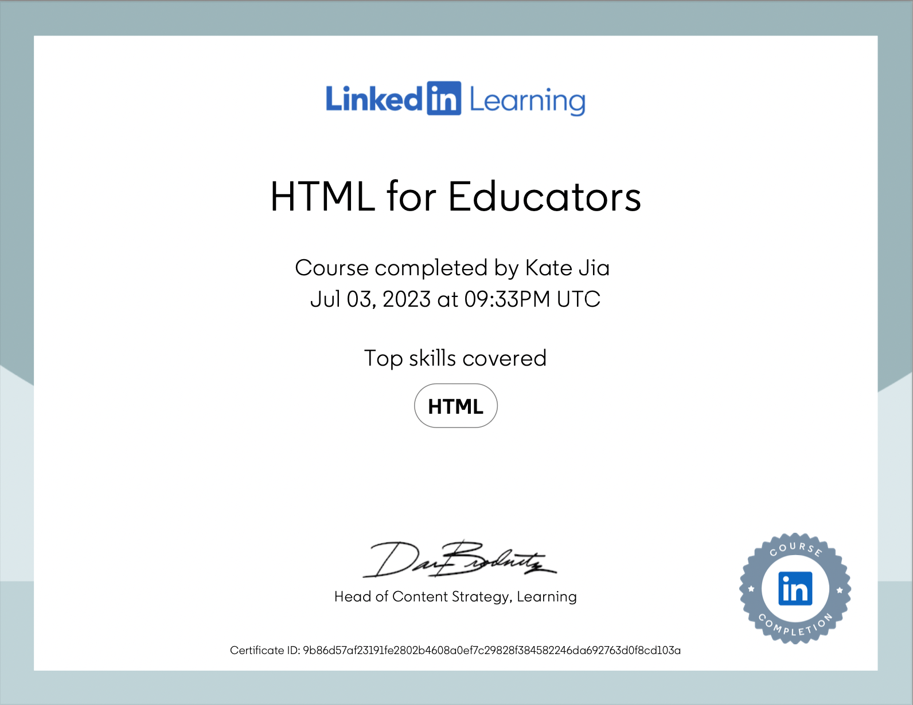

Hi, I am Kate. I am a Web Developer.
Contact Me Download my resume
UCLA Extension
Los Angeles, CA Certificate in Applications Programming GPA 3.95/4.0
Relevant Coursework:
Website Development with Adobe Software: Photoshop, Dreamweaver, and Animate; Programming in C# for Visual
Studio .NET Platform; Fundamentals of Software Development and Programming;
Data Science Fundamentals; Architecting Cloud Solutions Using AWS; Fundamentals of Cybersecurity
The Johns Hopkins University - Nanjing University Nanjing, China
Center for Chinese and American Studies
Master of Arts in International Studies
Concentration: Energy, Resources, and Environment (Minor: American Studies)
Sichuan Agricultural University
Ya’an, China
Bachelor of Economics (Minor: Japanese)
• < Hungry Squirrel > Developed a game application called “Hungry Squirrel” with Java.
In this game, there is a squirrel in a maze looking for nuts. The player will guide the squirrel to find and eat the nuts.
Once the squirrel finds all the nuts in the maze, the game is over.
• < Welcome UCLA > Created a brand-new application called WelcomeUCLA with Visual Basic.
It allows students to input their names, ages, and majors in the home page to log in.
•
Programming Languages: Java, Python, SQL, C#, JavaScript, HTML 5, CSS 3, Node.js, React.js, Express.js
Languages: Bilingual in Mandarin and English
Relevant Skills: Microsoft Office, Adobe, Zoom, Photoshop, R, Web 3, MongoDB, DApps
